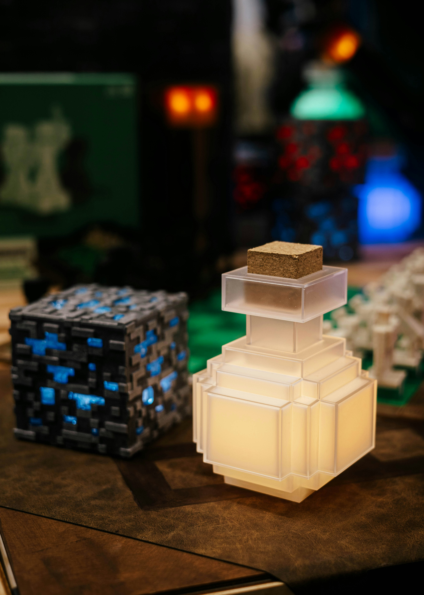

Starting My Minecraft Adventure
October 1, 2026 by Rheanna Harrison

Minecraft is a game that allows players to explore an enormous world and create almost anything they can imagine. When I first started playing, I was fascinated by how much freedom the game provides. From gathering resources and building shelters to exploring caves and discovering new places, there is always something interesting to do.
One of my favourite parts of Minecraft is being able to turn a simple idea into something creative. Building a home, designing a farm or creating an entire village can take time, but the finished result makes the effort worthwhile. Every adventure also brings something new, whether it is finding valuable resources or simply exploring the landscape.